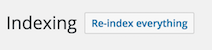

Custom attributes
Discover how to push your custom attributes and adapt your Algolia ranking settings.
Introduction
By default, the plugin indexes some chosen attributes for each content type. The complete list can be found here.
Sometimes, you may want to push additional attributes, and also adapt your ranking formula accordingly.
To illustrate the many concepts involved in building a search based on custom data, let us guide you through a concrete example.
Page Visits Matters!
Example: We want to consider the page visits count in the ranking formula for all the post types.
In this example we will show you:
- How to bootstrap a plugin,
- A very naive way of counting page visits and keep track of a counter per post,
- How to append the post visits count to the data pushed to Algolia,
- How to override the default Ranking Formula to take into account the visits counter,
- How to secure the sensitive data,
- How to queue a re-indexing tasks at a given interval,
Bootstrap A New Plugin
Let's say that our plugin is called "Visits Matters".
Create your plugin file ./wp-content/plugins/visitsmatters.php with the following content:
<?php
/*
Plugin Name: Visits Matters
*/Head to your WordPress admin panel and go enable your freshly created plugin.
Count Page Visits
This is a very trivial way of counting visits, do not use this implementation on a production website which has a lot of traffic.
Here is our little plugin code to be able to track visits.
<?php
function vm_increment_post_counter() {
if ( ! is_singular() ) {
return;
}
$post = get_post();
vm_increment_post_visit_count( $post->ID );
}
function vm_get_post_visit_count( $post_id ) {
return (int) get_post_meta( $post_id, 'vm_visits_counter', true );
}
function vm_increment_post_visit_count( $post_id ) {
$visits_count = vm_get_post_visit_count( $post_id );
update_post_meta( $post_id, 'vm_visits_counter', (string) ++$visits_count, (string) --$visits_count);
}
add_filter( 'wp', 'vm_increment_post_counter' );We simply store the counter in a meta field attached to the post, and only increment that value when we are on a singular post page.
We also prepared an easy way to get the current post visits count: vm_get_post_visit_count. This will be very handy when preparing the data for Algolia.
Push Your Visits Count To Algolia
Now that we have a way to retrieve visits count for every post, let's add it to every Algolia post records.
<?php
function vm_post_shared_attributes( array $shared_attributes, WP_Post $post) {
$shared_attributes['visits_count'] = vm_get_post_visit_count( $post->ID );
return $shared_attributes;
}
add_filter( 'algolia_post_shared_attributes', 'vm_post_shared_attributes', 10, 2 );Now every time we prepare a record to be sent to Algolia, we will add the visits_count attribute.
Adjust Ranking Formula
Now we want to tell Algolia to take into account the visits_count attribute for the relevancy calculation.
This can be done easily with the algolia_posts_index_settings filter. If you are not familiar with overriding the settings, please read this documentation page.
The default custom ranking is configured as follow:
<?php
array(
'desc(is_sticky)',
'desc(post_date)',
);To understand the best way to customize the custom ranking, please ensure you are familiar with Algolia's way of ranking with TIE breaking algorithm
For this example, we'll keep it simple and simply insert our visits_count at the first position of the custom ranking rules.
Again, be sure to understand what that means in terms of ranking. In a real case scenario, you might need to consider making different ranges of visit counts like:
- from 0 to 100 visits => 1
- from 0 to 500 visits => 2
- above 2000 visits => 3
The objective here is to allow next rules to still be considered by the breaking algorithm.
Let's implement the settings adjustment:
<?php
function vm_posts_index_settings( array $settings ) {
$custom_ranking = $settings['customRanking'];
array_unshift( $custom_ranking, 'desc(visits_count)' );
$settings['customRanking'] = $custom_ranking;
return $settings;
}
add_filter( 'algolia_posts_index_settings', 'vm_posts_index_settings' );Secure Your Sensitive Data
Everything you push to Algolia is securely stored. However, by default, when you perform your search queries on the frontend, every attribute is returned.
Even if the data is not displayed on the page, someone could go and see the json payloads and get every data.
Sometimes you want your ranking algorithm to take some sensitive data into account. We could easily imagine for example pushing product margins so that products that are more profitable will be ranked higher in the results.
Let's assume that in our little example the visits_count is sensitive data and that we want to avoid returning it as part of the search query result.
Here we adjust our settings:
<?php
function vm_posts_index_settings( array $settings ) {
$custom_ranking = $settings['customRanking'];
array_unshift( $custom_ranking, 'desc(visits_count)' );
$settings['customRanking'] = $custom_ranking;
// Protect our sensitive data.
$protected_attributes = array();
if ( isset( $settings['unretrievableAttributes'] ) ) {
// Ensure we merge our values with the existing ones if available.
$protected_attributes = $settings['unretrievableAttributes'];
}
$protected_attributes[] = 'visits_count';
$settings['unretrievableAttributes'] = $protected_attributes;
return $settings;
}Re-index everything button on the Indexing admin page of this plugin:
Your data is now safely stored in Algolia, used in the ranking formula but un-retrievable from the frontend!
Sync data with Algolia
We now have everything ready, the only missing part is to sync the posts with Algolia.
2 possible ways to achive this would be:
- Listen for the WordPress
updated_post_metaaction hook, and queue async_posttask every time a new visit has been noticed - Schedule a re-index task at a given interval
In this case, we certainly do not want to trigger a sync task every time a visitor accesses a page of your website. So let's follow the second path.
<?php
// Queues re-indexation of every post type.
function vm_re_index_posts() {
/** @var Algolia_Plugin $algolia */
global $algolia;
$task_queue = $algolia->get_task_queue();
$indices = $algolia->get_indices( array(
'enabled' => true,
'contains' => 'posts',
) );
foreach ( $indices as $index ) {
$task_queue->queue( 're_index_items', array( 'index_id' => $index->get_id() ) );
}
}
// This action is required for wp_schedule_event binding.
add_action( 'vm_re_index_posts', 'vm_re_index_posts' );
// Registers the recurring vm_re_index_posts event.
function wp_register_re_index_posts() {
if ( ! wp_next_scheduled( 'vm_re_index_posts' ) ) {
wp_schedule_event( time(), 'daily', 'vm_re_index_posts' );
}
}
// Only register the event on WordPress init.
add_action( 'init', 'wp_register_re_index_posts' );We now have a fully functional plugin that will force a re-indexation of all post types every day.
Complete Plugin Code
Here is the complete plugin source code:
<?php
/*
Plugin Name: Visits Matters
*/
function vm_increment_post_counter() {
if ( ! is_singular() ) {
return;
}
$post = get_post();
vm_increment_post_visit_count( $post->ID );
}
function vm_get_post_visit_count( $post_id ) {
return (int) get_post_meta( $post_id, 'vm_visits_counter', true );
}
function vm_increment_post_visit_count( $post_id ) {
$visits_count = vm_get_post_visit_count( $post_id );
update_post_meta( $post_id, 'vm_visits_counter', (string) ++$visits_count, (string) --$visits_count);
}
add_filter( 'wp', 'vm_increment_post_counter' );
function vm_post_shared_attributes( array $shared_attributes, WP_Post $post) {
$shared_attributes['visits_count'] = vm_get_post_visit_count( $post->ID );
return $shared_attributes;
}
add_filter( 'algolia_post_shared_attributes', 'vm_post_shared_attributes', 10, 2 );
function vm_posts_index_settings( array $settings ) {
$custom_ranking = $settings['customRanking'];
array_unshift( $custom_ranking, 'desc(visits_count)' );
$settings['customRanking'] = $custom_ranking;
// Protect our sensitive data.
$protected_attributes = array();
if ( isset( $settings['unretrievableAttributes'] ) ) {
// Ensure we merge our values with the existing ones if available.
$protected_attributes = $settings['unretrievableAttributes'];
}
$protected_attributes[] = 'visits_count';
$settings['unretrievableAttributes'] = $protected_attributes;
return $settings;
}
add_filter( 'algolia_posts_index_settings', 'vm_posts_index_settings' );
// Queues re-indexation of every post type.
function vm_re_index_posts() {
/** @var Algolia_Plugin $algolia */
global $algolia;
$task_queue = $algolia->get_task_queue();
$indices = $algolia->get_indices( array(
'enabled' => true,
'contains' => 'posts',
) );
foreach ( $indices as $index ) {
$task_queue->queue( 're_index_items', array( 'index_id' => $index->get_id() ) );
}
}
// This action is required for wp_schedule_event binding.
add_action( 'vm_re_index_posts', 'vm_re_index_posts' );
// Registers the recurring vm_re_index_posts event.
function wp_register_re_index_posts() {
if ( ! wp_next_scheduled( 'vm_re_index_posts' ) ) {
wp_schedule_event( time(), 'daily', 'vm_re_index_posts' );
}
}
// Only register the event on WordPress init.
add_action( 'init', 'wp_register_re_index_posts' );